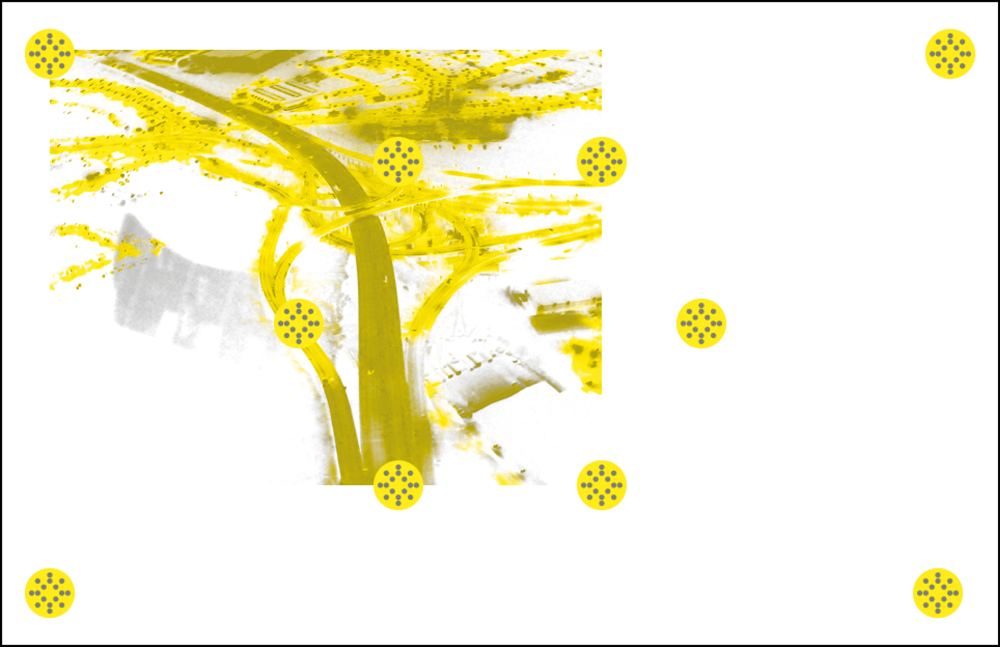
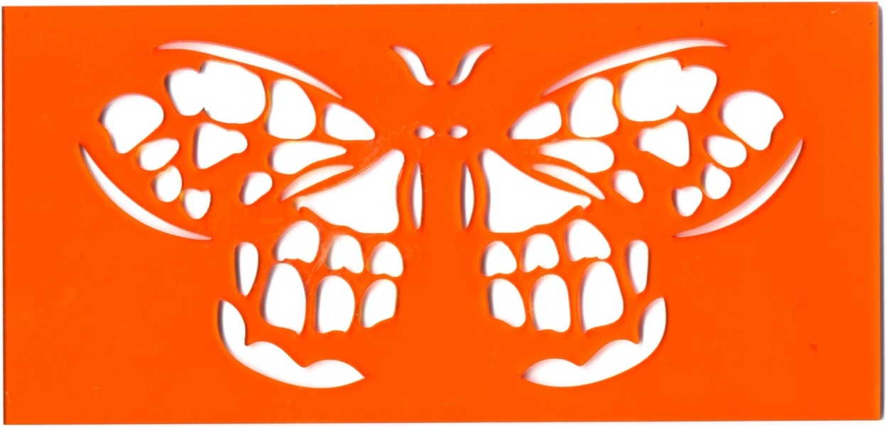
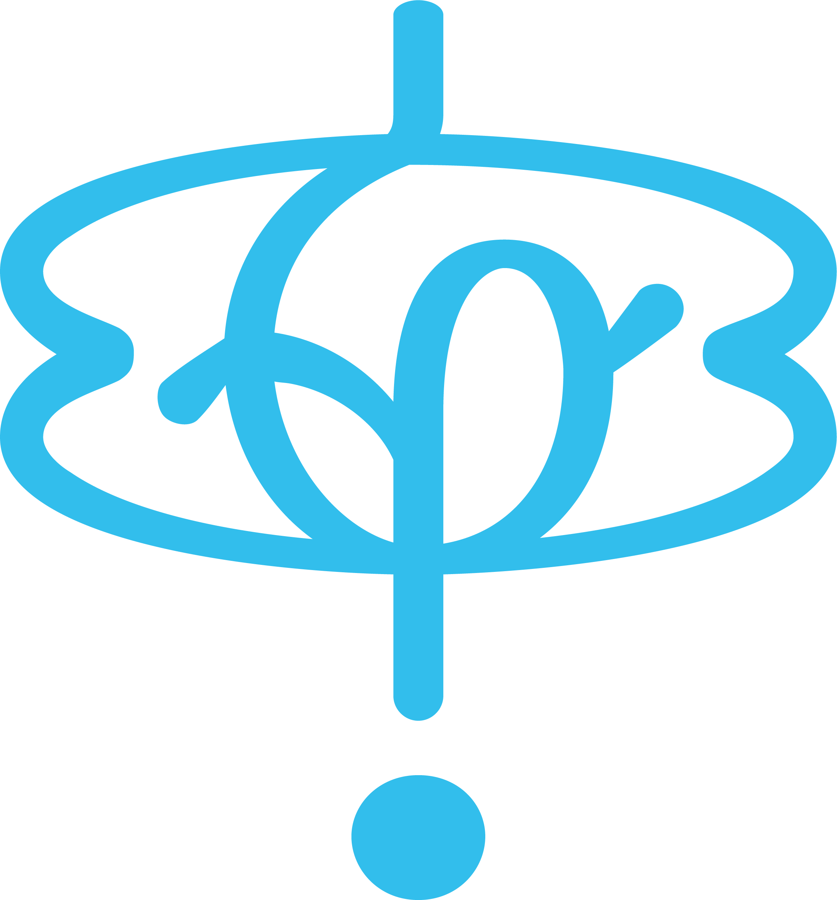
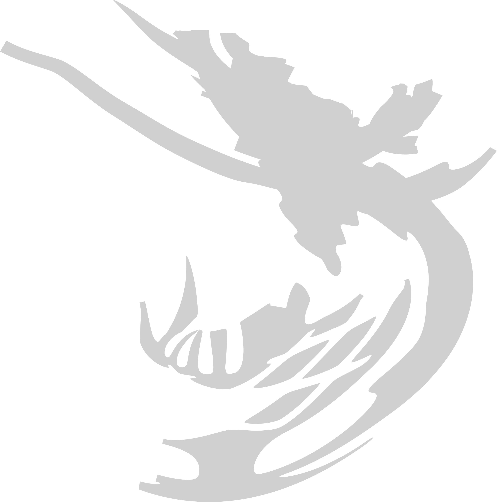
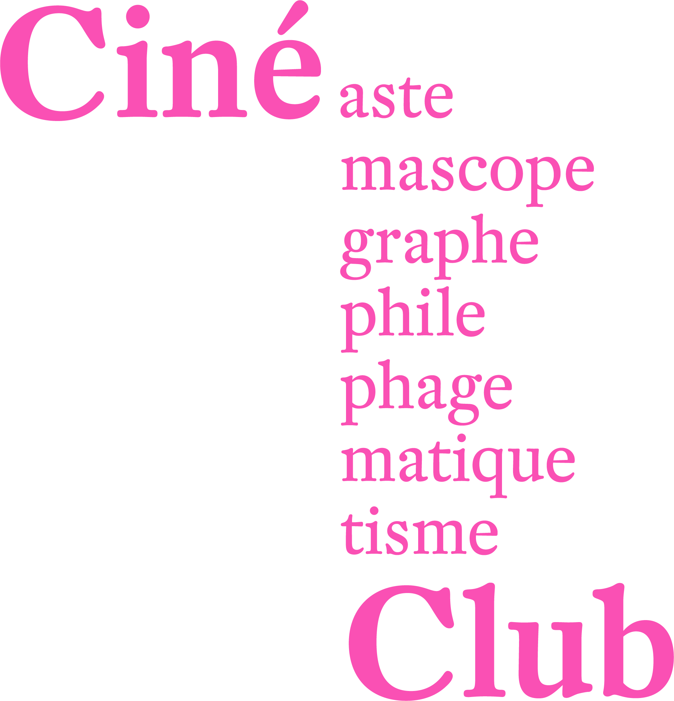
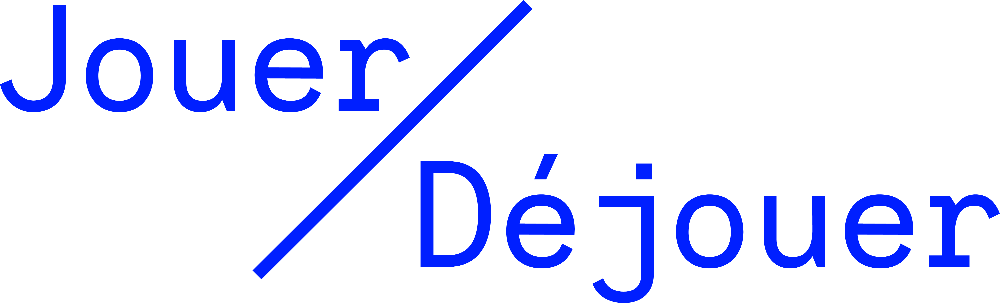
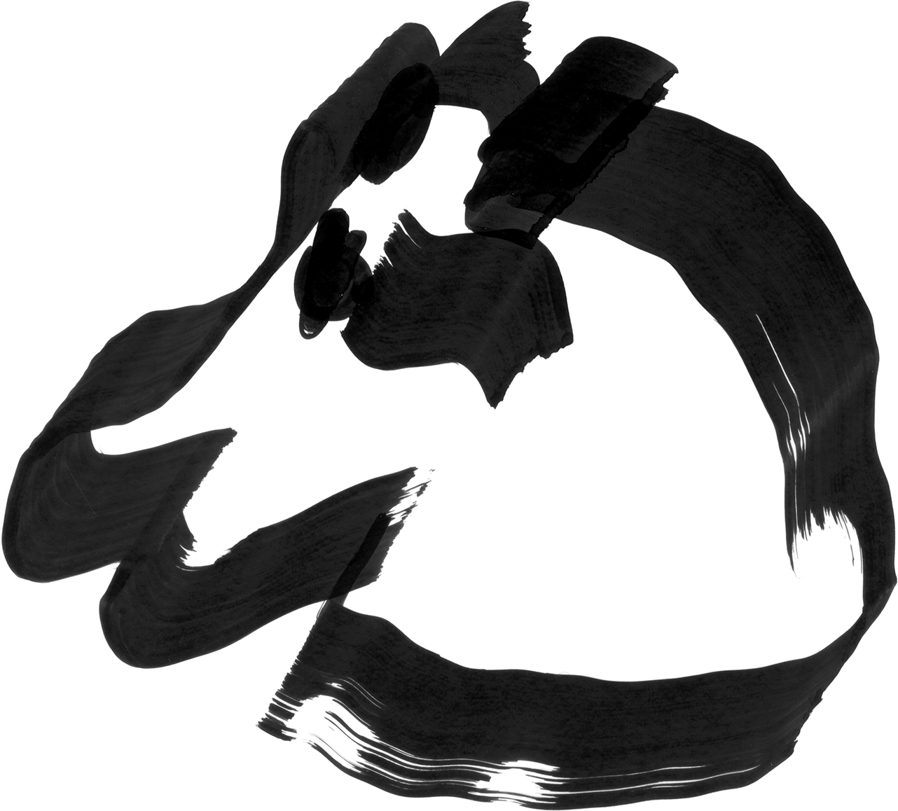
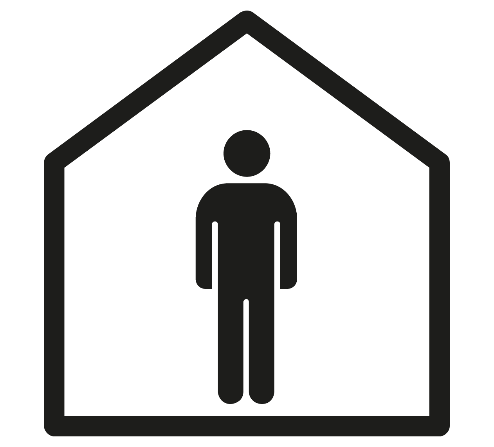
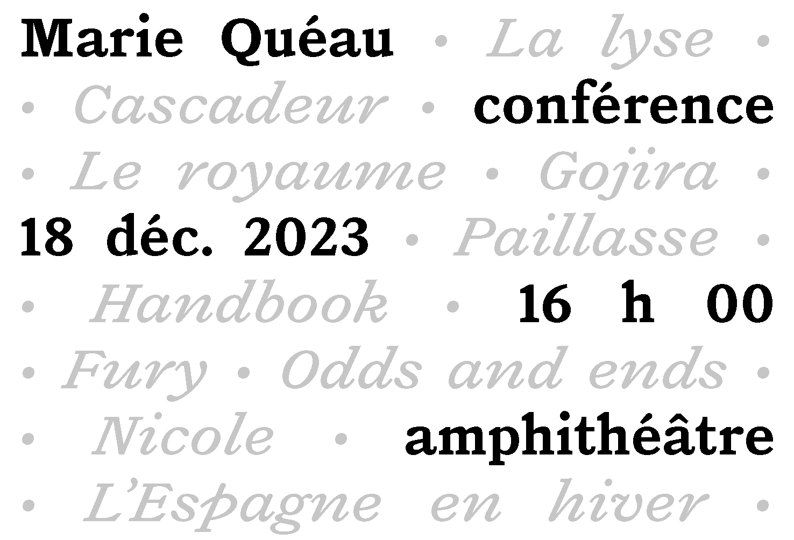
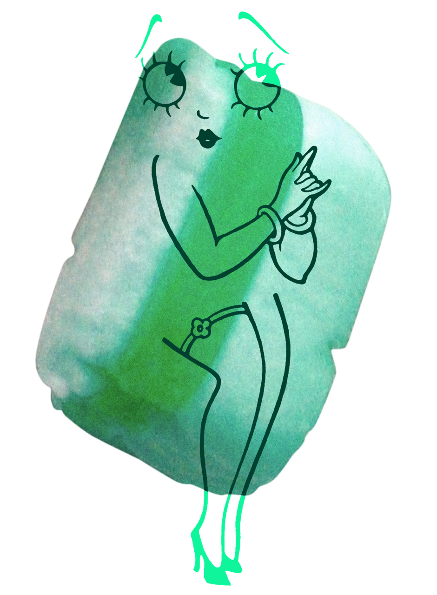

Signalétique du CCAM, 2025

I want to [...] 2025
Qui reconnaît les visages ? 2025

Le Chat, le Chardon et la Caslon, 2025

Ciné Club, 2025
Wor(l)dbuilding, 2025
Version contre version, 2025

Jouer/Déjouer, 2024

We like you, come visit ! 2024
ER, 2024

Bring the Outdoors in, 2024
Slayer, 2024

La venue de Marie Quéau, 2023
